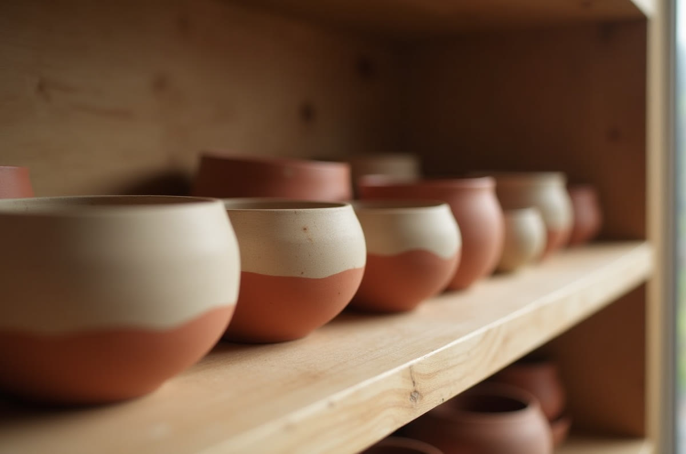

01 · Scroll story · GSAP Flip
Studio Terra
A handmade-ceramics long-scroll with a real GSAP Flip gallery — process shots assembling from a stack into a cascade.
Open build →
Next: Shader / liquid · 3D / WebGL · Cursor
More coming
In progress
The remaining effect families rebuild here, one flagship at a time.